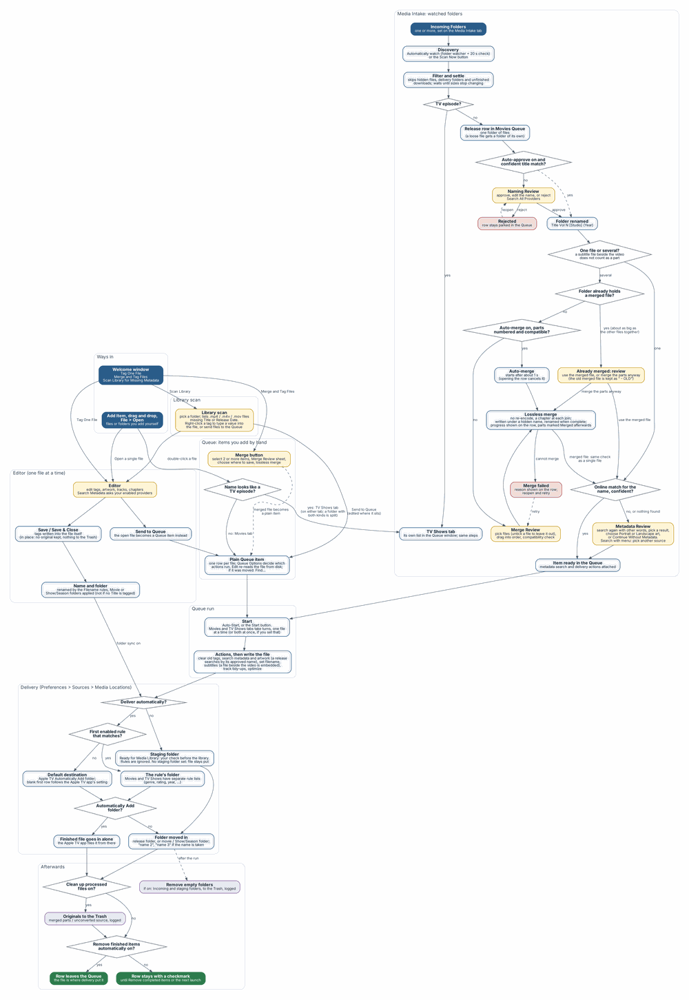

Incoming Folder. A folder where downloads arrive. M3 can watch one or several of them.
Ready for Media Library. The staging folder where finished files and folders are placed. It is your last human checkpoint before the files reach a media server. M3 never writes into your final library itself.
Queue. An ordered list of jobs. There are two lists, the Movies Queue and the TV Shows Queue, shown as two tabs of one Queue window. Jobs run in the order shown, one at a time. By default the two lists take turns (see 5.1).
Row. One line in a Queue. A row is either a plain item (a single file you added by hand) or a release (a folder of files discovered by Intake that still needs naming, a metadata decision, or a merge).
Release. A folder that holds one title, either as one file or as several parts. A release moves through stages: waiting for naming, waiting for a metadata decision or merge order, merging, ready, done. A release stays the same row for its whole life.
Review sheet. A small panel that slides out of the Queue window when M3 needs a decision from you: Naming Review, Metadata Review or Merge Review. You open one by double-clicking a row or choosing Edit.
Provider. An online source of metadata and artwork, such as TheMovieDB, TheTVDB, Apple TV or the iTunes Store. Custom sources are providers you define yourself from a web API. Plugins are compiled providers added as bundles.
Set. A saved group of metadata fields that you can apply to a file in one step, for example a fixed rating or content advisory.
Naming rule. A template that builds a file name from the file’s tagged metadata, for example Title [Studio] (Year). Rules can be conditional.
